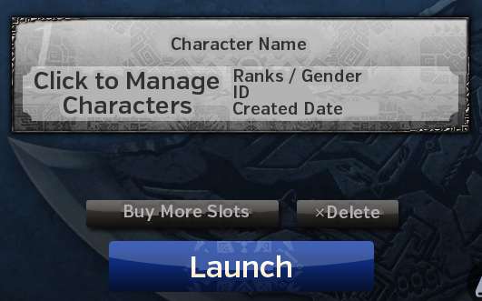
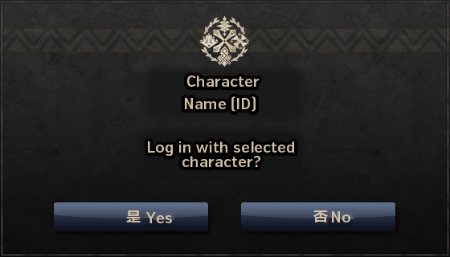
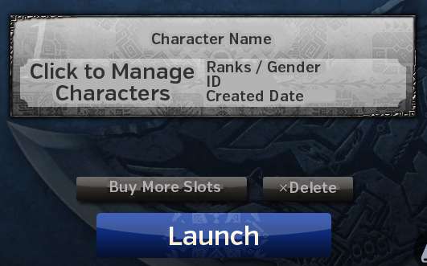
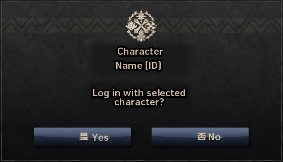
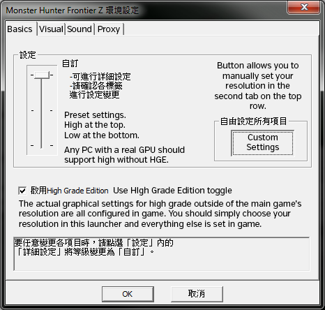
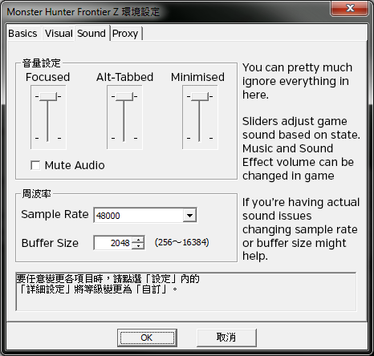

Menus and NPCs
Hover menus to show original Chinese text.
Change your timezone to (UTC+08:00) Taipei whenever you want to log into the game, being in another timezone will cause logging in to fail. A quick guide can be found here.





Generally speaking you will only need to use the options above once, all other settings will then be configured in game. The final tab on the configuration window are Proxy Settings which you can completely ignore as they will be useless to everyone 99.9% of the time.
The start menu contains easy access to a lot of information and is where you configure most of the settings that can be changed in game.
The Hunter Status menus have access to a lot of information including Equipment Info and the Guild Card which displays things such as your Hunter Rank, HRP to next rank, active subscriptions, Guild info, Attack and Defense values, etc.
Personal Status allows you to set a number of icons for your player which will flash for anyone who is checking icons and has the same ones set.
Guild Card shows a large amount of information, check the section below for details.
Equipment Details allows you to check your town and quest sets and see details on each piece of equipment.
Tower Card shows detailed information on everything relating to the Tower or Sky Corridor. Check the Tower section for details.
SR Books shows you details on the various SR weapons you have, you cannot change any settings here such as moveset but you can confirm them.
Hunter Experience is basically a collection of trophies representing things you have accomplished, with trophies depending on points in the various settings. These can be viewed by other players but ultimately mean nothing.
Story Progress shows what mission you're on for the various story questlines (those from the Yellow Guild Sweetheart).
Area Info shows info on the current area.
Monster Info shows information on various monsters including maximum and minimum sizes and number hunted, this requires you to have purchased the books on the monster type at the Shop NPC.
Ancient Treasures shows what treasures you have collected in the Tower, and what effects these have enabled. Check the Tower section for details.
The Community menus contain most things relating to interacting with other players including sending mail and managing the blacklist.
Friends List shows you all the people you have registered as friends, this is a one way system and other players do not have to have you on their list for you to have them.
The Joinable Toggle option simply lets you set if players with you on their friends list can directly jump to your lobby.

There are currently three Lock On modes in the Taiwanese version:
TW Lock On: Displays icons at the bottom of the screen and can toggle which monster is locked on with R2 which and lock with L1. This is active on the 'Off' option and as it was added before the official version it has some quirks such as being able to lock on to burrowed or invisible monsters.
JP Lock On: Basically a direct copy of the 3DS games lock on. Type 1 locks on with a single press and resets camera with a double and Type 2 does the opposite. You have to pause and hit R1 to change targets in these modes.
You can change the binding of all control types by accessing the Control Bindings section under the Control Options menu.

For PSP style controls, choose the second option in the first drop down on the controller section.
If you want to rebind things you will have to work out what everything you want to rebind is, as I am not going to go through every weapon type and translate every action.
You can access in game chat by pressing insert (or by holding L2 and R2), there are various filters and modes available.

You can toggle filters with the buttons at the top of the chat pane and change modes with:
Shift+Up/Down/Left/Right.
To whisper a player you can press square while in front of them or click their name in the chat window.
You can perform gestures by hitting # and then the F keys (6 will open the second page of gestures).
@here will cause you to post a link to the server you are currently on that other players may click.
@re will cause insert the number of spots left on your quest.
@dice will post the results of a dice roll with a range of 1-100.
@clr1/@clr2/@clrall/@clrpast will clear the chat.
@help will display all available commands.
@a/@f/@p/@g/@u will send a message to certain chats. In order they are Global, Local, Party, Guild and Alliance.
<act1> through <act24> will cause you to perform a gesture.
<act25> through <act48> will cause you to perform any legendary gestures you might have bought with Tower Medals (in town only).
Story and Item Trading Guild Sweetheart

Gives initial tutorial quests, story quests and allows you to trade for some items.
Guild Mistress

Gives quests after the first tutorials, gives Gook quests, SR books and moveset urgents. Allows you to trade monster kills for medals to get Talismans to reduce time waiting after quests, get more HP on quest start, etc.
Main Quest Guild Sweetheart

Gives all non-G Rank quests after you progress from the Guild Mistress.
Caravan Sweetheart

Gives Caravan quests outside of the Caravan Area. Has Caravan Festival missions whenever it is on as well as the rewards that and the following week.
Combiner

Batch combines objects. Does special combining for items such as pots using Halk feathers. Exchanges gallery tickets for rewards and cash items for luck medals etc. Exchanges monster kill medals for talismans. Sells various combination items.
Lunchbox / Ingredients NPC

Packs Lunchboxes for quests. Sells most ingredients needed to make said lunchboxes.
Basic combinations and locations for the ingredients are below, it's recommended to always post quests with buffs at least as good as those listed whenever possible.
| Lunchbox Combinations | ||
| Warm Season | Fist Rice + Spirit Mushrooms | +50 HP / +50 Stamina |
| Cold Season | Fist Rice + Frost Tomatoes | +50 HP / +50 Stamina |
| Breeding Season | Fist Rice + Power Lard | +50 HP / +25 Stamina |
| Food Types and Locations | ||
| Guild Cat Store | Spirit Mushrooms, 980z (鬼松茸) | |
| Guild Cat Store | Frost Tomatoes, 450z (霜降番茄) | |
| Lunchbox NPC | Fist Rice, 550z (拳頭米) | |
| Lunchbox NPC | Power Lard, 400z (力量豬油 ) | |
Purple Guild Sweetheart

Updates subscriptions. Gives out purchases, event and compensation items. Has quests for titles. Exchanges subscription stamps for HL and EX tickets.
Hunter Festival Manager

Festival Points are turned in to her. Has a table of all monsters and the points they're worst. Shows current team rankings. Trades festival points for items.
Hunter Festival Winners NPC

Gives out quests to whichever team colour won the Festival, these use medals received based on the number of points you contributed to be taken.
Furniture and Gallery NPC

Sells and creates furniture with materials. Trades stamps for making furniture for farm upgrades. Sells farm tools. Does a gallery evaluation allowing you to get Gallery gems and various other rewards.
G Rank NPC

Gives out G Rank quests including Event quests and Conquests.
Guild Manager

Allows creation and joining of Guilds after you have finished the tutorial (and have a sub for creation).
Store Sweetheart

Sells the majority of consumable items, has much better stock when you are subscribed compared to on the trial including selling honey. Sells books for the monster list, combining, house expansion and box expansion.
Tower NPC

Gives out Tower quests and rewards while the tower is available.
Blacksmith

Does all base crafting and upgrading until G Rank, still does most of it even then.
Cat Smith

Creates armour and weapons for Partynaas. Creates randomised Gou Weapons. Creates Sigils at G Rank.
Lottery Cat

Allows you to gamble with various items to get rewards back. Mostly paid for with real money, mostly at poor odds. Lotteries are time limited so should be used ASAP.
Warehouse Manager

Warehouse NPC
Holds items given for daily rewards and HRP tickets received for quest completion. Also has a warehouse function to store items and equipment.
You may access the warehouses 5 times every 12 hours, accessing the warehouse will allow unlimited transfers between both equipment and normal boxes. You have 10 pages of both, which can be individually renamed.
When transferring items you will be presented with your main box and the warehouse box itself, to access the warehouse box you simply need to press left or right enough to navigate out of the currently active box and enter the translucent one. Sending items is pretty much identical to moving them between your inventory and box, you simply select the item and then choose the quantity to send over.
Tower Weapons Cat

Creates and adjusts Tower Weapons. See the Tower section for more details on this.
Legendary Blacksmith

Currently does not appear, previously was used to upgrade some G Rank weapons.
Kashira

Gives you a level 0 gem when you first talk to her. She is also used to set up Raviente hunts.
Caravan Sweetheart

Gives the various Caravan quests in Pallone.
Caravan Combiner

Batch combines objects. Does special combining for items using Caravan mats. Sells various combination items.
Store NPC

Sells standard store items.
Food NPC

Sells food and packs lunchboxes.
Upper Food NPC

Upper Food NPC
Packs lunchboxes. Specifically for packing larger lunchboxes that use four items for the various Raviente hunts.
Caravan Gathering Spots

Allows you to set up gathering in the various maps in exchange for CP, materials and time. Some items can only be gotten from this, such as those needed to craft a full Unknown armour set.
CP Store

Trades CP for various Caravan items including Whetstones that give +10% Affinity and materials for Caravan weapons.
Caravan Gem Smith

Upgrades the Caravan Gem and Maintains it. Allows you to roll Gem colour or get a rainbow Gem.
Caravan Leader

Gives a 2 hour buff in exchange for 200k CP.
 Main House
Main HouseHouse Cook

Cooks meals for you and anyone in your house, bypasses any bentos posted with quests. Useful for eating Adrenaline food without needing everyone to lose HP. Talking to him directly gives you an overview of what food you have available, sit at one of the various sized dining tables to actually get a meal prepared.
 Gook Farm
Gook FarmGook Manager

Looks after your gooks and gives all shinies dropped by Gooks within the area if talked to. Allows access to gook cooking. Creates decorative items for gooks.
Farm Tools Cat

Allows you to use the gook farm tools once per quest taken.
Mail Cat

Allows you to transfer items between characters on your account. Requires a subscription.
Lost Cat

A cat who wants you to find items it has misplaced in town, has a chance to appear after normal quests (non-deliveries) and can give exclusive items such as crowns that can be used to craft armour sets.
 My Support Island
My Support IslandMy Support Manager

Manages all aspects of your Halk. Allows you to hire Partnyaas.
 Pugi Farm
Pugi FarmPugi Farm Manager

A girl who's looks will vary based on outfits purchased for her and which of the three sisters you choose when setting up the Pugi farm. Gives daily points. Allows you to spend points on Pugi farm facilities. Allows you to buy the various Cat stores. Gives special missions to get exclusive items such as G Whetstones. Converts extra points into GCP.
Pugi Farm Cat Manager

Manages the Cat stores you've set up in Airou Plaza. Enables and disables wandering cats to be hired.
Pugi Farm Partynaa Manager

Allows you to select which facility your Partnyaa is working at.
 SR Challenge Room
SR Challenge RoomS
Gives out various vanity challenges. Allows you to take quests to upgrade the final four stats on your Book of Secrets (See Style Rank section).
R
Gives out various vanity challenges.